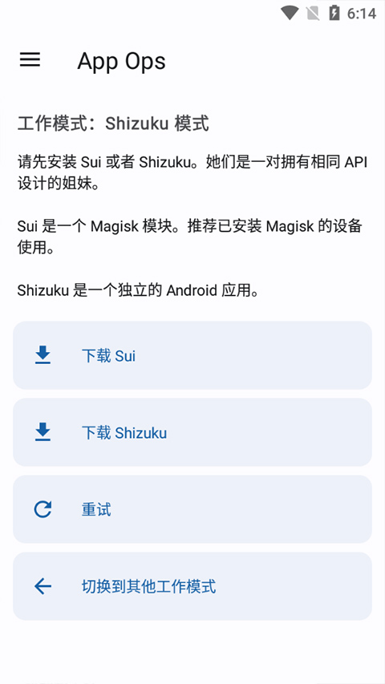
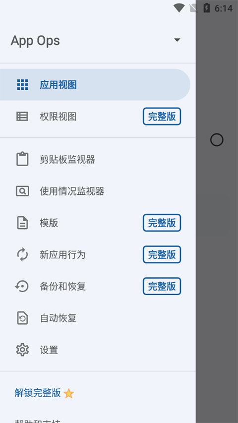

App Ops 版本进化史：从 root 党专属到全民可用的权限手术刀
从只有 root 才能用的命令行工具，到支持 Shizuku 和 DPM 双模式的系统级权限管理器，App Ops 的每一次大版本迭代都在和 Android 系统的权限机制赛跑。
现在这版，已经不像当初了
我第一次接触 App Ops 是在 Android 7 时代——那时候它还是个"root 党专属玩具"，装完之后得重启进入 recovery 刷一个 patch，才能让系统框架暴露被隐藏的 appops API。现在这版？安装包从官方下载拿一份，授权一下 Shizuku 或者 DPM，就能在界面上给每个应用的每一项权限设四种状态：允许、拒绝、忽略、仅在使用期间允许。
这个差异大到什么程度？大到 App Ops 在 v5.0.0 那档子事上，几乎是把整个项目重写了一遍——不是修 bug，是"发现底层逻辑根本错了"。

从哪起步的：Android 系统里藏了个什么东西
要理解 App Ops 的版本演进，得先知道 Android 系统里有个叫 appops 的东西。简单说，Android 有两层权限机制：一层是你在设置里看到的"已授予/已拒绝"（runtime permission），另一层是系统内部维护的 appops——这层东西系统从来不给普通用户看，但它才是真正控制应用能不能用某个能力的地方。
App Ops 就是专门操作这层隐藏机制的工具，它的官网对 appops 这层机制有更详细的技术解读。
早期版本的 App Ops 走的是纯 root 路线——拿到 su 权限之后，直接用 shell 命令读写 /data/system/appops.xml。这条路简单粗暴但有个致命问题：它只能改 package mode，而 Android 从 10 开始把权限优先级偷偷转移到了 uid mode 上。
v5.0.0：踩过的最大的坑
v5.0.0 之前的版本，逻辑是这样的：读取应用的 package mode，修改它，写回去——完事。这个逻辑在 Android 6-9 上跑得好好的，因为那时候系统设置的权限和 appops 的 uid mode 没什么冲突。
然后 Android 10 来了。
系统设置里新增了"仅在使用期间允许"，这是个之前 appops 里没有的 foreground 状态。用户在系统设置里把某应用的定位改成"仅在使用期间允许"，系统就给这个应用的 uid 写入了 foreground 模式。但 App Ops 看不到 uid mode，它只改 package mode——而 uid mode 的优先级更高，package mode 被完全忽略。
最诡异的地方是这个问题不是一出来就被发现的。Android 10 发布之后，大量用户从 9 升级上来，系统的权限设置被原封不动保留，于是 uid mode 里早就埋着 foreground 或 ignore，而 App Ops 改 package mode 改来改去什么效果都没有。社区里"为什么 App Ops 不管用了"的抱怨开始蔓延，但没人知道根因在哪——因为 App Ops 根本没把 uid mode 这层东西当回事。
v5.0.0 的重写就发生在这个背景下。新版本做了三件事：第一，同时管理 uid mode 和 package mode，不再只盯着一个；第二，根据运行时权限状态和 permission flags 综合计算正确的设置，而不是简单覆盖；第三，彻底移除了纯 root 模式——因为 root 只有 uid 0 的 shell 权限，没法修改 permission flags，只有 Shizuku 模式能提供完整的 Java API 调用。
这个决定挺狠的。v5.0.0 发布后，一大批老用户在反馈里骂"为什么不能 root 用了"——但团队的回答很硬：纯 root 模式在 Android 10+ 上就是有功能缺陷，继续维护只会让更多人踩同样的坑。

工作模式的分叉：Shizuku 还是 DPM
v5.0.0 砍掉纯 root 之后，App Ops 有两条路走。
第一条是 Shizuku 模式——通过 ADB 启动 Shizuku 服务，它提供了一组完整的 Java API 代理，让 App Ops 能像系统应用一样调用权限管理接口。这条路线的好处是能力全：appops 完整、runtime permission 可设置、permission flags 可读写，连 Android 11 新增的"每次都询问"都能支持。代价是每次重启得重新 ADB 激活——虽然有自动重启 Shizuku 的配套应用，但还是比"一次设好永远生效"麻烦。
第二条是托管设备管理员模式（DPM）——让 App Ops 成为 profile owner 或 device owner，从系统 API 层面获得 appops 操作能力。这条路线的优势就是持久：一次设置长期有效，重启不需要重新激活。但它有硬伤：Android 系统对设备管理员权限的 API 暴露不完整，DPM 模式没法设置 permission flags，所以 Android 11 的"每次都询问"功能在 DPM 模式下就是不支持——这不是 App Ops 的 bug，是系统层面的 API 缺口。
现在的 App Ops 两种模式都支持，用户可以自己选。这种"两条腿走路"的策略挺有意思——团队没有在 Shizuku 和 DPM 之间二选一，而是承认两条路各有取舍，把选择权留给用户。这和早期版本那种"只有 root 一条路"的独断风格完全不同，是成熟度的体现。
一直在死磕什么：四种状态的边界
四种权限状态——允许、拒绝、忽略、仅在使用期间允许——看起来简单，但 App Ops 的迭代里，这块是反复打磨的核心。
"忽略"模式是最特别的。它和"拒绝"的底层行为完全不同：拒绝让应用"知道权限被拒了"，忽略让应用"以为权限在但拿不到数据"。早期版本里这两种状态的区分很模糊，用户设了"忽略"发现应用弹窗，或设了"拒绝"发现应用退出，搞不清区别在哪。后来版本在界面上给每种状态加了底层 mode 值的显示，把 ignore 和 force-stop 的技术差异直接暴露给用户——虽然普通用户可能看不懂 mode 值，但至少知道"这俩不是一回事"。
"仅在使用期间允许"是 Android 10 才有的 foreground mode，也是 App Ops v5.0.0 重写后才真正支持的。早期版本要么不支持这个模式，要么假装支持但实际只改了 package mode，根本没生效。v5.0.0 之后 App Ops 才真正理解了 foreground mode 和系统权限面板的映射关系。
什么一直没管：版本迭代的取舍
从版本历史来看，App Ops 团队有非常清晰的优先级：功能正确性 > 功能覆盖面 > 易用性。
他们宁可砍掉纯 root 模式（牺牲一部分老用户），也要保证 Shizuku 模式能正确工作。他们没有在 DPM 模式上硬造功能（比如强行让 DPM 支持 permission flags），而是老老实实标注"这个模式下 Android 11+ 有限制"。去App Ops 文档翻一下就能发现，他们在权限状态的文档上花了很多精力，把底层 mode 值、各 Android 版本的映射关系都写清楚——但应用界面本身其实挺朴素的，没有华丽的动画也没有个性化主题。
备份功能也是个例子。Shizuku 模式下 App Ops 可以完整备份所有权限设置，但 DPM 模式的备份一直有缺陷——因为 DPM 本身没法读取全部 appops 状态。团队没有为了"看起来功能完整"就强行把两种模式的备份按钮做成一样的，而是明确区分了两种模式的备份能力差异。
预判：下一步大概率会怎么走
从迭代规律推，有几个方向是大概率的。
第一，uid mode 和 package mode 的交互逻辑应该还会继续完善。Android 11 之后系统又加了不少权限状态的变化（"每次都询问"就是一个），以后每个 Android 大版本都可能带来新的 appops mode，App Ops 得一直跟着系统更新。
第二，Shizuku 模式的激活体验可能会优化。现在"每次重启要 ADB"还是最大的使用门槛，如果 Shizuku 本身能做到开机自启（现在有配套应用尝试实现，但稳定性一般），App Ops 的普及度会上一个台阶。
第三，DPM 模式的能力边界可能会随着 Android 系统的更新而变化——但这不是 App Ops 能控制的，得看 Google 对设备管理员 API 怎么设计。
还有一个不确定的方向：多用户/工作资料夹。App Ops 现在已经支持多用户了，但每个用户独立管理权限的体验还比较粗糙——切换用户之后权限设置列表是独立的，但跨用户的设置同步目前是没有的。这块如果做起来会很有用，但优先级目前看不高。
总结一下这条进化路线
App Ops 从 root 党命令行工具到现在，版本迭代的核心逻辑就一句话：它一直在追 Android 系统权限机制的变化，而不是反过来让系统适应它。早期版本以为 appops 就是个简单的 XML 读写，v5.0.0 发现系统底层是两层 mode、复杂的版本映射、和 runtime permission 深度绑定的东西。现在的 App Ops 已经能正确处理这些复杂性了——但系统还在变，它还得继续追。
我手里这份 App Ops 是 Shizuku 模式，已经稳定跑了好几个月没出过什么问题。权限设置列表有几十项，大部分是忽略模式——那些新闻 App 的定位、天气 App 的通讯录、购物 App 的存储权限，全都被设成了忽略，它们照常运行，只是拿不到数据。这种"能跑但偷不到东西"的状态，就是 App Ops 存在的意义。
这套 App Ops 的资料我在三个仓库都放了一份：在 GitHub 上维护主版本，Gitee 是国内同步镜像，GitCode 那边也有一份备份，方便不同环境的人取用。